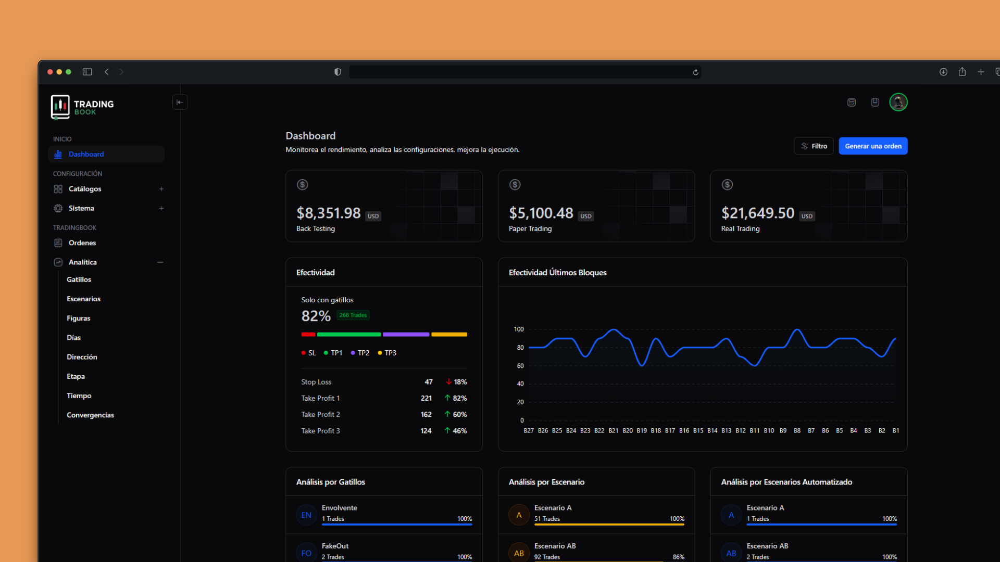
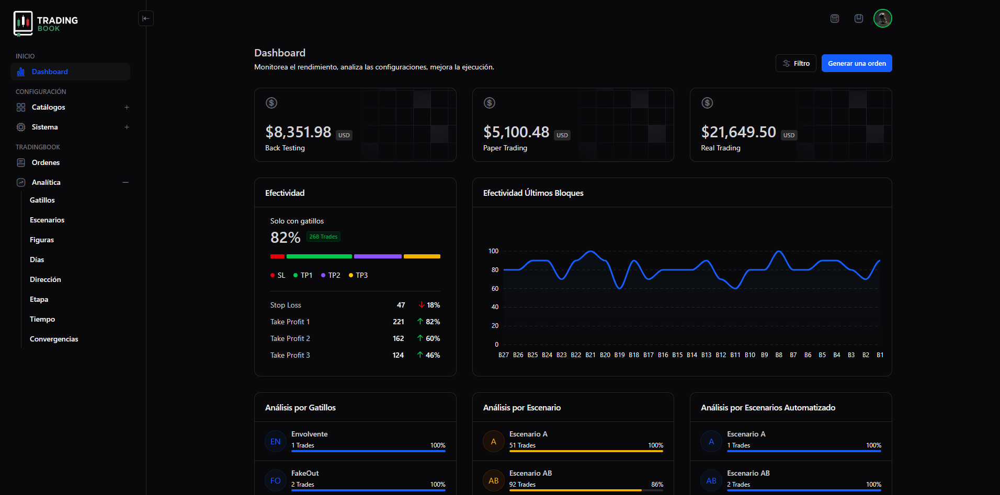
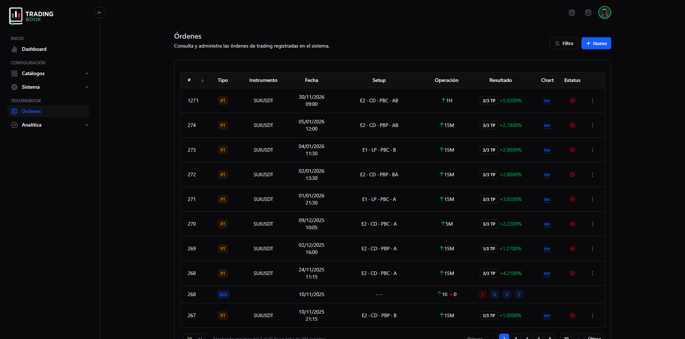
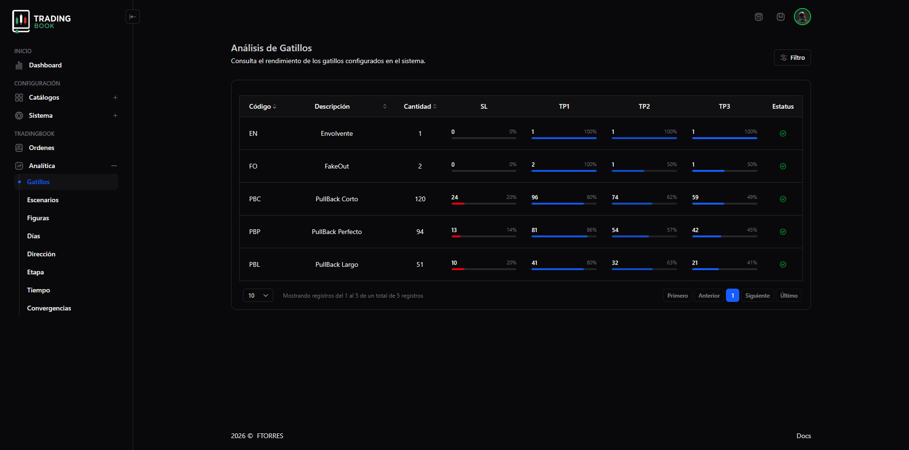
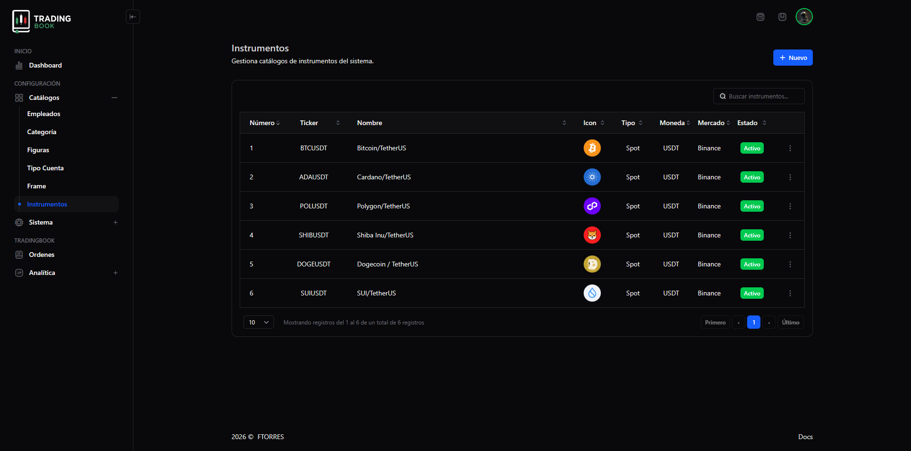

Trading Book
Plataforma web para centralizar operaciones de trading cripto, medir performance, evaluar setups y convertir ejecuciones reales en información accionable.


ASP.NET Core MVC
Clean Architecture
Identity + Authenticator
Database-first analytics
Trading Book nace como una herramienta para analizar la calidad operativa de cada trade. El sistema registra operaciones, cuentas, triggers, escenarios, figuras, direcciones y temporalidades, y los transforma en indicadores para detectar patrones, medir consistencia y mejorar la toma de decisiones.
Contexto y solución
Trading Book convierte el registro de operaciones cripto en una base analítica para medir consistencia, comparar setups y detectar patrones. La solución centraliza trades, cuentas, catálogos y dashboards en una aplicación .NET con arquitectura limpia y foco en datos accionables.
Capacidades principales
Trading Score Engine
Evalúa cada operación por ubicación, tendencia, confirmación y zonas pivote.
Análisis multidimensional
Lecturas por trigger, escenario, figura, dirección, temporalidad y día.
Dashboard y exploración
Visualizaciones con Chart.js y tablas DataTables para revisar performance.
Gestión operativa
Cuentas, balances, catálogos, actividad de usuario y módulos administrativos.
Arquitectura
El proyecto sigue Clean Architecture con dependencias unidireccionales y separación clara entre presentación, lógica de aplicación, dominio e infraestructura.
Controladores MVC, vistas Razor, middlewares, helpers y assets estáticos.
Servicios de negocio, DTOs, contratos, modelos de resultado y recursos localizados.
Entidades, constantes y enumeraciones que representan el núcleo del negocio.
Persistencia, repositorios, Identity, email y logging de actividad.
Seguridad y hardening
Autenticación robusta y configuración segura
Identity con 2FA, confirmación de email, recuperación de contraseña anti-enumeración, rate limiting, cookies HTTPS y credenciales externalizadas.
Mi rol
Diseñé la arquitectura funcional y técnica del producto.
Desarrollé backend, servicios de aplicación y persistencia en SQL Server.
Implementé dashboards, consultas analíticas y exploración tabular.
Fortalecí autenticación, configuración segura y trazabilidad.
Un producto analítico para tomar mejores decisiones operativas.
La plataforma resume datos operativos en señales claras para evaluar desempeño, consistencia y calidad de ejecución.
Capturas del producto
Dashboard, operaciones, análisis y catálogos clave del sistema.


Dashboard con métricas de efectividad, balance y rendimiento.


Consulta de operaciones con filtros, objetivos y estado.


Análisis de efectividad por gatillo y objetivos alcanzados.


Catálogo de instrumentos para estandarizar la operación.